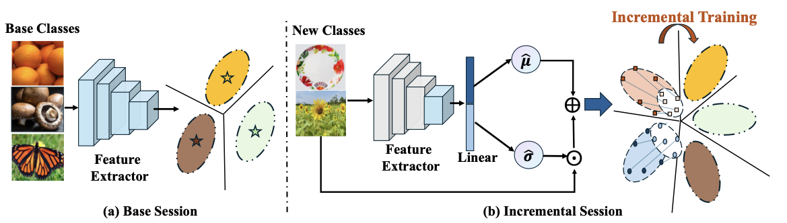
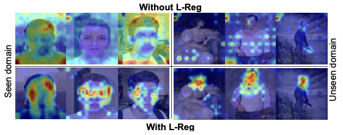

PremiLab
The Laboratory of Cognitive Computation and Applied Technology (LCCAT) was founded in July, 2016, and is based at Xi’an Jiaotong Liverpool University, Suzhou, China. LCCAT currently has 37 researchers, and the main research interests of the Lab are pattern recognition, cognitive learning, machine learning, and their applications in text, image, sound, and video. Research in LCCAT has been supported by many grants from organisations such as the National Natural Science Foundation of China, Jiangsu Science and Technology Programme-Key Research & Development Project , and industrial cooperation.Recently Accepted Papers

Covariance-based Space Regularization for Few-shot Class Incremental Learning
IEEE/CVF Winter Conference on Applications of Computer Vision (WACV), 2025.

Interpret Your Decision: Logical Reasoning Regularization for Generalization in Visual
Classification
Neural Information Processing Systems (NeurIPS), 2024 Spotlight.
ES-GNN: Generalizing Graph Neural Networks Beyond Homophily with Edge Splitting
IEEE Transactions on Pattern Analysis and Machine Intelligence (TPAMI), 2024.
Inter-feature Relationship Certifies Robust Generalization of Adversarial Training
International Journal of Computer Vision (IJCV), 2024.
News
Dec 2024: 4 papers accepted to AAAI 2025.Sep 2024: 1 paper accepted to NeurIPS 2024 as Spotlight.
Sep 2024: 1 paper accepted to TPAMI.
Jul 2024: 1 paper accepted to ACM MM 2024.
Publications
We publish our research in premier machine learning and deep learning venues.Publication List
Since 2017 © XJTLU PremiLab [redesign by
Maizhen Ning
].
All Rights Reserved.